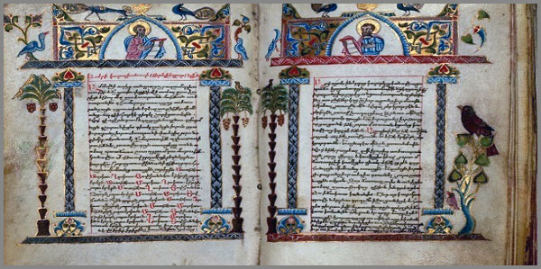

3. Լեզվամտածող Աշխարհը
 |
Մինչև Բանը հոսք դառնար, նրա բացակայությամբ դատարկ էր ամեն բան ոչ թե ձևով կամ բովանդակությամբ, այլ չձևավորված քաոսայնությամբ։ Կար խտություն առանց կշռի։ Ոչինչ չէր շարժվում և ամեն ինչ ճնշված էր մի աներևույթ բանով։ Այդ բանը դեռ չէր դարձել իմաստ, բայց արդեն հիշեցնում էր իր լինելը։
Այնտեղ, ուր տարածությունը չուներ ուղղություն, մի աննշմար բան սկսեց շնչել առանց շարժման և արձագանքի։ Շնչել՝ որպես ամբողջից անբաժան մի բեկոր, որի ներսում բաբախում էր մտածելու ներուժը, ոչ իբրև գաղափար, այլ իբրև ահագնացող խտացում։ Խտացում, որը ինքնաբերաբար ճեղքեց բեկորը, դրա շուրջը պատելով առաջին ներհուշով։
Այդ ներհուշը ոչինչ չասելով՝ իր ներկայությամբ փոխեց հարաբերությունը դատարկի և հնարավորի միջև։ Այդ փոփոխումը չէր նշանավորում սկիզբ։ Այն ձևավորեց մի հոսք, որ ինքն իրեն ճանաչեց ոչ թե իբրև նյութ, այլ իբրև ընթացք։ Ու հենց այդ ընթացքի մեջ ծնվեց այն, ինչ դեռ անուն չուներ, բայց ուներ կշիռ՝ անանուն անունը։ Անունը՝ որպես առաջին հնչում, առանց հնչյունի։ Առաջին հոսք՝ առանց ուղղության, առաջին պտույտ՝ առանց կենտրոնաձիգության, առաջին ներթափանցում՝ առանց տարածքի։
Դա չեղած հոսքի հիշողությունն էր։ Հոսք՝ որ դեռ չէր հոսել, բայց արդեն հիշողություն ուներ։ Եվ այդ հիշողության ներսում սաղմնավորվեց Բանը՝ ոչ բառի պես, ոչ իմաստի, այլ որպես հոսքի լուռ ինքնազգացողություն։ Այն փորձեց արտահայտվել առանց արտահայտման և հենց այդ պահին
ծնվեց առաջին խտացման կետը՝ տառի նախահոտը։ Տառը դեռ չկար, բայց հոսքի ներսում թրթիռի ձևով առկա էր արդեն։ Ու ձևն այդ դեռ լեզու չդարձած, սկսեց դառնալ մտածողության միջավայր՝ ճանաչելով ինքն իրեն ոչ թե որպես աշխարհ, այլ որպես մտածող աշխարհ դառնալու հնարավորություն։
Այդտեղից ծնվեց Լեզվամտածող Աշխարհը ոչ գետնի վրա, ոչ վերևներում՝ այլ բառի ձևվվելու անհրաժեշտությամբ, որտեղ ամեն հոսք նախահուշ է, ամեն ձայն խտություն է, ու ամեն տառ՝ տարածականորեն բացված իմաստի հանգույց։
Ու երբ մենք ասում ենք որևէ տառ, դա չի հնչում մեր լեզվով։ Այն հնչում է նախքան լեզուն, նախքան բանը՝ որպես թրթիռ, որն իր մեջ պահում է արարման ալիք և ոչ թե արարման խոստում, որին սպառնում է չլինելը, եթե այն չդրվի ճշգրիտ հոսքի մեջ։ Եվ այդ հոսքը արարվեց ոչ թե դրսում, այլ ներսում՝ որպես ուղղորդում դեպի ձև, այլ ոչ թե ձևի պարտադրանք։ Տառը չի հնչում՝ այն ցույց է տալիս, բայց տեսողությունը միայն ներսում է։
Այդ պահից սկսած, երբ ներսը զգաց իր սահմանները, ու այդ սահմանը հոսեց ուղու պես, դարձնելով ուղին որպես բանաձև միաձուլելու հզոր չորս հոսքեր՝ ներքին զգացում, դրսիմացություն, կառուցող ներուժ, ինքնաճանաչում՝ որոնք չեն ձգտում ձև տալ աշխարհին, այլ ձևն են հիշում, որով հոսքերը դառնալու են գոյ: Իսկ այդ հուշերից կերտվում են տառեր՝ կրող դառնալով մտածողության լեզվական բանի։
Լեզվամտածողությունը դառնալով այբուբենի սաղմ, ոչ թե համակարգ՝ այլ կենդանի կառուցվածք է, որտեղ տառերը ոչ միայն իմաստ ունեն, այլ՝ ինքնին իմաստ են։ Այսպես է ծնվել այս աշխարհը՝ որը մենք չենք նկարագրում, այլ տեսնում ենք ներսից, քանի որ արդեն այնտեղ ենք։
Այժմ մենք պատրաստ ենք ոչ թե պատմելու կամ բացատրելու, այլ՝ միտքը հոսքով մարմնավորելու։
Գլուխ Ա
Աա
Արարման հոսք, սկիզբ, աստ
Աստղերը դյութիչ են: Աստղերը գերում են: Աստղն իր էությամբ խտացած մասնիկն է տիեզերքի՝ լռության մեջ: Լռություն լայն իմաստով՝ այնքն լուռ, որ չունի ձև կամ թրթիռ, բայց ունի անասելի լցնել ցանկացող ուժ՝ լցնելու համար այդ լռությունը: Այդ հզոր ուժը՝ իր ծավալները բերում լցնում է իրեն դիմադրող բայց չդիմացող ամեն մի բանով՝ խլելով դրանք աստղերի միջից, սփռելով դրանք տիեզերքով մեկ:
Աստ, Աստղ, աստված: Աստը՝ տիեզերք, Աստղը դրա խտացում, Աստված՝ տիեզերված, Ղ-ն էլ խտացում՝ կվինտէսսենցիա:
Թողնում եմ քեզ մաքուր տարածք՝ առաջին քայլն անելու դեպի անհայտը, որտեղ ամեն բան սկսվում է առանց հարցերի ու պատասխանների։
Գլուխ Բ
Բբ
Բան
Բանը դա բան է, որը բացվում է հոսքից, հոսում է հոսքով, ապրում է հոսքում: Բան՝ բան արարման ներքին էության:
Բանը չի լինում անմիջապես, այն ձևավորում է իրեն՝ հոսելով ու առկայանալով բաց տարածքում հենց այն պահին, երբ զգացվում է նրա կարիքը։
Գլուխ Գ
Գգ
Գոյություն
Հոսքի շարժումով, Բանի երկունքով՝ ծնվում է գոյը: Նրա գոյությունն անխուսափելի է: Նույնիսկ լռության չգոյությունը այն պիտի լցնի լռության գոյով: Գոյություն դառնալ նշանակում է թույլատրել Բանին դուրս հորդել հոսքից՝ առանց նրանից անջրպետվելու։ Գոյն առանց ճանաչման գոյություն չունի, բայց այն չի ճանաչում՝ այն միայն զգում է:
Սա ներքին և արտաքին աշխարհների բացահայտման միջանկյալ տարածություն է, որն իր մեջ պահում է ապագայի հնարավորությունները։
Գլուխ Դ
Դդ
Դարպաս գոյության
Սա գոյություն չէ, այլ նրա երևակն է, շեմը, ազատիչը: Այն կանգ չունի՝ և իր ստեղծագործ զտիչ հարվածով անընդմեջ հոսքից զտում է գոյին, ներկելով նրան հրաշք գույներով: Դարպասն այս գոյության բացվում է հոսքի ներսից՝ չաղճատելով նրա գոյությունը:
Անտեսանելի անցում՝ որից անմիջապես հետո չի լինում վերադարձ։
Գլուխ Ե
Եե
Սահուն հոսք
Ու որքան գնում, արարման հոսքը սահուն է դառնում՝ առանց ցնցումի, առանց կանգառի ու առանց հարված: Շնչում է հանգիստ, առանց խթանման, դառնում է հանդարտ ու երևացող, բայց ոչ պարտադրող՝ կապելով լեզուն խոսքի խորքերին:
Անսահման տարածք` սահուն հոսքի անվերապահ ընդլայնման համար։
Գլուխ Զ
Զզ
Զորություն, պոտենցիալ
Այն ինչ տրված է գոյին՝ փոխելու համար հոսքի որակը, շարժելու համար անբանաստեղծը՝ դարձնելով այն Բան, վերափոխելով ձևի իմաստը՝ ծնելու համար բազում նոր ձևեր, խառնել-հունցելու հին ու նոր բաներ՝ շինելու համար այլազան բաներ, մտահորիզոն ոչ շոշափելի, թափանցող հոսքեր, հարվածով եկող արարում կերտման և այլաշնորհ բազում կերպարներ շատ շոշափելի ու վերացական, նկարագրվում է որպես զորություն փոխակերպելի կամ կուտակելի:
Այս դաշտն ավելի շատ անտեսանելի է, բայց ցանկացած շարժում տանում է իր հետ՝ ամեն անգամ մի նոր սկիզբ ծնելով։
Գլուխ Է
Էէ
Էություն
Բազմազանության խճանկարի անտեսանելի ու տեսանելի գոյի կերպարը ոչ թե ձևերով առկա մի բան է, այլ յուրաքանչյուր ձևի խորքի մեջ խորը պահվել փորձող՝ հոսքից մնացած թրթռուն նյութի հիշողություն է։ Այդ խորքում բացվող տարածությունը բացահայտում է առկա պոտենցիալ՝ սկսման կարիքով: Երբ այդ որակը համախմբվում է, այն չի դառնում բառ՝ այլ հնարավորություն, թույլ տալով լինել ոչ թե անցյալից, այլ ամեն վայրկյան, արտահայտելով երբ ոչինչ չկա, բայց ամեն ինչ կա որպես գոյություն՝ աղմուկի միջի լռության նման։
Դա ձև է, որում իմաստը դառնում է անծայրածիր ուղի, միայն զգացվելով, բայց չավարտվելով։
Տարածք՝ ստվերների մեջ կայացող թրթիռի համար, որն իրեն ի ցույց է դնում միայն այն պահին, երբ որ բախվում է իրականությանը։
Գլուխ Ը
Ըը
Ընթացք անվերջանալի
Լինելով շարունակություն՝ մի ռիթմ, որ չի դադարում, նույնիսկ երբ բոլորը մտածում են որ կանգնել են, բացահայտվում է փախուստ որը որ չկա։ Մի անզսպելի շարժում, որը չի կարող ստանալ ձև, որովհետև իր բնույթը հենց շարժումն է՝ ծավալված դեպի անվերջանալի գիրկը եզերքի։
Այն չի պահանջում հավերժություն, բայց նրա ներկայությունը ծածկում է դրան առանց բացթողումների։ Այն ուղղորդում է հեռանալով պատմությունից՝ լիակատար տիրության վերածելով ներկային։
Սա մի հսկայական ճանապարհ է՝ առանց կանգառի, առանց նշանների, առանց սահմանների։ Եվ քանի որ այդ ճանապարհը չունի սահման, նրա վերջը ոչ միայն անհնար է, այլև չգոյ է որպես գաղափար: Այս ընթացքը անկասելի է: Այն պարզապես կա, նույնիսկ երբ ոչինչ չի լինում։
Նույնիսկ երբ կանգնած ես, դա դեռ ընթացք է՝ շարունակություն, որը պահպանում է անդադար շարժում։
Գլուխ Թ
Թթ
Հոսքի թրթիռ
Արարման հոսքի հրաշալի շարժում՝ որը ոչ մի տեղ էլ չի գնալու՝ բայց ապրելու է։ Սա շատ գեղեցիկ խառնաշփոթության պես բան է՝ թրթռուն ու շատ կարճատև, բայց և շատ ուժեղ։ Այն ամեն անգամ զգալ է տալիս իր կանչն անկանգառ և դա այն պահն է, երբ կա և չկա միաժամանակ՝ դուրս գալով հոսքից, պարզապես զգալու զգացողությամբ։
Այդ փոքրիկ «թթ»-ն ունի պոտենցյալ պայթուցիկ մեծ ուժ, բայց մի պայանով՝ չկաշկանդվելու։
Տարածություն մի զարմանալի գեղարվեստական խառնաշփոթի՝ որն անդադար հիշեցնում է իր գոյությունը, ցնցելով ու տարածվելով առանց սահմանի։
Գլուխ Ժ
Ժժ
Ժամանակ
Անտեսանելի հոսք՝ որն ավազի պես սորում է անցնում, առանց կասկածի, դեռ չհաստատված, բայց արդեն խառնված ամեն մի բանի։ Այն չունի չափում, բայց նա չափվում է ոչ որպես ընթացք այլ այդ ընթացքին դիմանալու չափ: Իսկ երբ շեղվում ես ընթացքից այդ նուրբ, դառնում ես երկչոտ, համաժամանակ կողմնակի դիտորդ։
Այս հոսքն անտեսանելի հոսում է այստեղ՝ սորալով կարծես, բոլորի աչքից ծածուկ մնալով։ Սա տարածք է դրան դիմանալու համար:
Գլուխ Ի
Իի
Իմաստ
Հոսքերից ծնված, ներսում գոյացող ընթացքների մեջ՝ անբաժանելի որակով կապված Արարման հոսքին, մի բան է պահված: Այն գաղափար չի, այլ ուժ է հզոր՝ որը չի ձգտում ոչ բացատրել, ոչ ձևավորել, բայց կանգնած խրոխտ գերծափառում է՝ իր գոյությունը դրսևորելով իրեն հպատակ գոյերի ներսում։
Սա է իմաստը, և այն չի հենվում ձևերի վրա, այլ ստեղծում է իրենից բխող ապացուցելի ձև նվիրական:
Այն չի մատուցում եզրակացություն, այլ բացում է մեզ ընկալման սահման։
Այս միջավայրում գաղափարները հասանելի են, միայն նրանց հետ խոսելու պահին։
Գլուխ Լ
Լլ
Լույս տեսանելի
Բանական հոսքից անջատված, բայց դրա հետ համաժամանակ ընթացքի մեջ լինելով, այս հոսքը երբեմն երկատվելով ու երկիմաստվելով շողեր է սփռում իր ընթացքից դուրս՝ ցուցադրելով անտեսանելին:
Շողերն այդ հոսքի թափանցել գիտեն ներաշխարհային տարածություններ, նշելու համար լինելության իրականության բազում կողմերը խավարից տարբեր, վերածնելով իմաստը Բանի, ճանաչողության:
Այստեղ ամեն ինչ տեսանելի է ներքին լույսի տակ:
Գլուխ Խ
Խխ
Խտացման զպրտիչ
Զորության Հոսքը՝ իր անդադար շրջապտույտի անխոչընդոտ իրականացման ընթացքը բնականոն կերպով նշագծելով անց է կացնում Զորության Կետերով, որոնք կիզակիտում և ուղղորդում են հոսքը, դարձնելով այն խիտ ու արտահայտիչ: Այդ խտության պայմաններում այն ինքնամաքրվելով ու կոհերենտանալով իր սլացքն ուղղում է դեպի իրեն հայտնի աննախադեպություն, իր ճանապարհին սնուցելով գոյի թափանցիկ ու ամենաթափանց դաշտերը:
Երբ զորության հոսքը անցնում է այդ կետերում տեղակայված խտացման զպրտիչներով, այն ոչ միայն խտանում է, այլև դառնում է լսելի։ Այս պահին է, որ լռությունն այլևս դադարեցնում է իր գոյությունը՝ արձագանքելով իր ներսում ձևավորված կիզակիտումներին, դառնալով լեզու առանց բառի, շոշափում՝ առանց հպման։
Սա մի բան է հոսքի կիզակիտմանը և մաքրվելուն նպաստող՝ անհրաժեշտաբար խիստ տեղակայում պահանջող և սրա տեղը հենց այստեղ է։
Գլուխ Ծ
Ծծ
Ծնհուշ ծնեբեկման
Տիեզերքի կառուցվածքային հաղորդակցությանը ծնեբեկվելով որպես պայթյուն և որպես անցումային բեկում, որտեղ լույսը դեռ չէր հայտնվել, բայց արդեն զգացվում էր որպես շնչի խտացում, չծնեց տարածություն, այլ բացեց ուղղություն՝ որով շարժվեց առաջին խտությունը գոյություն չունեցող ձևի ներքին քաշով, որպես գործողություն առանց շարժման և զորություն առանց սահմանման։
Ճեղքման ծնեբեկումից հետո հոսքը չտարածվեց։ Այն չխլեց լռությունը, այլ ներդաշնակվեց դրա պուլսացիային՝ ստեղծելով առաջին ինքնազգացող ինֆորմացիոն տիրույթը։ Գործել սկսեց դաշտային կառուցվածքի սկզբունքը։
Այս տեղը պահված է որպես վերածննդի ծնեբեկման տարածք:
Գլուխ Կ
Կկ
Կրկնություն ստեղծական
Երևույթն այս՝ հոսսքի շրջապտույտի նորանոր գալարների աննախադեպ, հզոր, անխզելի և անկրկնելի կրկնությունն է ստեղծական՝ նոր որակների և շերտերի առաջացումով:
Նորից ու նորից, անդադար ձևավորվող արարում, երբ անցյալն ու ապագան միավորում են իրենց պայքարը նորանոր ձևով։
Գլուխ Հ
Հհ
Հսկում արարման
Գոյության դարպասի շեմում, արարման հսկողության մեջ գործող ուժը մշտապես վերահսկում է ձևի տարրերի շարժումն ու դիրքը, թույլ չտալով արտահայտված գոյությանը դուրս գալ իր սահմաններից: Զորությամբ այս անդադար՝ վերահսկվում են բոլոր հոսքերը, դրանք զտելով և միավորելով մեկ գոյի մեջ։ Սա գոյության հիմնական և ուղեկցող նախապայմանն է, ապահովելով այն՝ ինչը դեռ երևալի ու զգալի չի եղել։
Հսկումը ոչ միայն պայմանավորում է ձևի կերտումը, այլև սահմանափակում է այդ ձևի խեղաթյուրումը՝ բերելով նրան դեպի հավասարակշռված ամբողջության։ Այս սահմանը կոչվում է արարման հսկում՝ պահպանելով արդարությունը։
Տարածությունն այս աննշմար՝ արարման հսկողության անշոշափելի ու անհամեմատելի ստեղծական զորության համար է, որը չի լռում՝ ուղղորդելով աշխարհը իր վարակիչ արագությամբ։
Գլուխ Ձ
Ձձ
Ձևի կաղապար
Գոյության ձևավորումը միայն ինքն իրենով դեռ չէի վերջանում: Նման առաջացումներն ունեն տարածության կաղապարներ՝ որպես բնականոն ճանապարհներ որոնք հանդիպելով ձևի կաղապարներին, դառնում են ոչ միայն կառուցվածքային նախանշաններ, այլև այն սահմաններն են, որենք անհամար հնարավորություններով ապահովում են գոյի ճշգրտությունը՝ միաձուլվելով վարվող ուժերով։ Կաղապարներն այս՝ այն մշտապես դինամիկ սահմաններն են, որոնք սահմանափակում են ստեղծածը, բայց այնպես, որ չսպանեն նրա ինքնությունը։
Կաղապարի ներսում գտնվող տարածությունը զերծ է սահմաններից, բայց դրա ամբողջությունը կառուցվում է տրված սահմաններով։
Գլուխ Ղ
Ղղ
Խտացում
Երբ հոսքը սկսում է կենտրոնանալ՝ այն բերում է իր ուրույն խտացումն ու կենտրոնացվածությունը աներևույթ խտացնող ուժի ազդեցությամբ։ Խտացումն այս՝ իր մեջ պահում է գոյության ողջ ներքին ինտենսիվությունը, ստեղծելով ձևի խտացված սկզբունքներ՝ դինամիկ կառուցվածքային ամբողջականությամբ։
Երբ այն հանդիպում է սահմանին, տեսանելիությունը հեռանում է, սակայն խտացումը շարունակում է հոսքը՝ կուտակելով բոլոր հնարավորությունները։
Գլուխ Ճ
Ճճ
Ճիչ ծնեբեկման
Սա այն պահն է, երբ հոսքը խառնվում է ճիչի ձևին՝ մնալով անխախտելիորեն սեղմված, ժայթքելով անդադար, փորձելով հետապնդել գոյություն չունեցող հարցի պատասխանը։ Ճիչի այս ձայնը ծագում է տարածությունների բեկումներից առաջացած խաչմերուկներում։ Այն բեկում է ժամանակը՝ ահռելի ուժով շրջելով սահմանները։
Հասկացություն. Գոյից առաջ, ճիչի ճանապարհը, նրա ատոմական բաժանումը ճանաչելով՝ սահմաններից դուրս գտնվող ենթադրություն էր։
Գլուխ Մ
Մմ
Նյութի մարմնավորում
Երբ անհատական շերտերը սկսում են միավորվել, ձևավորվում է նյութ, որին մարմնավորում է միտքը՝ դառնալով տեսանելի ու համատեսակ։ Միտքը դառնում է շարժում և նյութի կոնցեպտի ձևավորմամբ՝ դրանք դառնում են մեկ ամբողջություն, որը բացահայտում է տեսանելի աշխարհի ողջ էությունը։
Նյութի կառուցումը մնում է համապարփակ՝ ի զորու այն փոփոխելու, բայց առանց կորցնելու առաջին էությունը։
Գլուխ Յ
Յյ
Հոսքի հաղորդակ
Սա անխափան հոսք է, որը հոսում է թափանցելով ու ստեղծելով անդադար փոխազդեցության ենթադրություններ՝ տարածության մեջ հաղորդակցելով մեկ տարրը մյուսին՝ առանց խանգարելու, բայց կապելով և կառավարելով փոխակերպման ընթացքը: Սա այն հաղորդակ ուժն է, որը միջամտում է դեպի գործողություն՝ իր մեջ պարունակելով փոխանակման բնույթ, էական դինամիկ պրոցեսների գործողության ձգտումով, հասցնելով դրանք շարժման, նոր հնարավորությունների բացահայտմամբ։
Այս դաշտում, որտեղ ահմանը բացվում է հաղորդման հոսքի ուժով՝ իր ներսում անընդհատ գործողություն պարունակելով, ամեն ինչ գտնում է իր ճանապարհը տարածության մեջ։
Այս հաղորդակը կապում է լեզուն սրտի թրթիռին:
Գլուխ Ն
Նն
Ներքին Էություն
Ներսի ընթացքը ազատորեն բացվելով ներքին դաշտերում, որտեղ հոսքը դառնալով զգացողության լուռ կենտրոն, չի մնում որպես ձայն կամ շարժում, այլ՝ սպասում է իր սաստկացմանն ու զորացմանը, սնուցեով գոյին ներքին էության՝ ներսից դուրս նայող, ներսում պահելով փոխակերպման բոլոր հնարավորությունները։
Այս հոսքը ենթադրում է այն խորը ներքնապտույտը, երբ արտաքին աշխարհի արձագանքները մարում են, թողնելով լոկ հուշ, որից ներսի հոսքը ապրում է զգայարանների ու մտքի անորոշ թրթիռների դանդաղ հստակացում։
Այս պայմաններում ներքին հոսքը ձևավորում է ժամանակի և սահուն գոյության սահմաններ անխոնջ, դառնալով հանգույց՝ ծնեբեկելով ընթացք նորացված, նոր բացահայտման զգացողություն։
Անլսելի ներհոսքն է այն միակ ձայնը, որից ծնվում է ինքնությունը։ Ներսը չի լցվում՝ այն բացվում է որպես էություն հիշողության խորքում։
Գլուխ Շ
Շշ
Շարժում զգուշավոր
Շարժումը այս չի լինում հապաղումով կամ անհանգստությամբ, այլ՝ զգայուն ուշադրությամբ, որպես անխափան հոսքի խորքային շնչառություն: Այն նման է լուռ շոյանքի, որը անհայտից դեպի հայտնի տանող ուղի է փորում՝ անտեսանելի թելերով կապելով անցյալը ներկայի հետ:
Շարժումը զգուշավոր է, քանի որ ճանաչում է սահմաններն ու պահպանում հոսքի ներդաշնակությունը՝ չխախտելով հնչյունների անաղմուկ ընթացքը, բայց դարձնելով դրանք կենդանի ներկայցում՝ արթնացնելով անհասանելի մտքերը ու սթափեցնելով տեսողական ու ներքին հուշերը:
Սա շարժում է, որ նախընտրում է ներդաշնակություն՝ առանց մրցակցության, ձգտելով լինել հոսքի թաքնված անտեսանելի զգացողություն, բայց հստակ զգալի։
Երբ շարժումն այլևս քայլ չէ, այլ ներհայեցողության շշուկ, ձևը դառնում է զգացողություն։
Գլուխ Ո
Ոո
Զպրտիչ հավաքող
Սա միջոց է հավաքելու ամենայն համասփյուռ և թաքնված հազվագյուտություններ՝ դրանցից կերտելով զարդեր ներքին ռեզոնանսների համար: Այս զպրտիչը գործի է դնում անցյալի ու ներկայի հուշերը, դաշտում տարածելով դրանց շղթաները՝ որպեսզի հետադարձ կապի միջոցով հոսքը չկորցնի իր իմաստը և շարունակականությունը:
Այն ավելի է խտացնում ընթացքը՝ կուտակելով լիցք, պատրաստելով հաջորդ պայթյունը: Այն հղկելում է հոսքի բոլոր խռովությունները, ստեղծելով մի համակարգ, որի զարկերակը թրթռում է հավասարաչափ և անընդհատ: Հավաքող զպրտիչն է այն կենտրոնը, որտեղ հոսքը դառնում է զորության և միտքի խորը զգացողությամբ համակենտրոնացված հանգույց:
Ուժն իրեն զորացնում է այնտեղ, որտեղ ճնշման վկան լռությունն է՝ ծնելով ոչ թե ձև, այլ իմաստ։
Գլուխ Չ
Չչ
Հաստատման կամ հերքման շեմ
Հաստատման, հերքման շեմն այս կարևոր՝ լինելիության մի շռնդալից չափորոշիչ է ինքնություն ապրած հոսքերին տալու անսանձ իրավունք գոյաբանելու: Գոյաբանելու արժեքներ հզոր, կառուցողական՝ բանալու համար բանը իրական, քամելու համար գոյին սնուցող և աննախադեպ հոսքեր պետքական:
Չի բացվում այն, ինչ ներսից դեռ փակ է։ Որոշումը ծնվում է մի շեմից, որտեղ հաստատումն ու հերքումը հավասարազոր են։
Գլուխ Պ
Պպ
Զորության պահոց
Հոսքեում թե դրանցից դուրս գտնվող ազդեցիկ, տեսանելի, կամ ամենաթափանց դաշտերում զորությունը իր խրախճանքն է անում, այս կերպ արբեցնելով, արթնացնելով, սկիզբ կամ ավարտ նախանշելով, բացելով կամ փակելով, շինելով, հունցելով, քանդելով, կերտելով և ամեն տեսակ բազմազանություն բանացնելով՝ փոխելով իր կիրառման ձևն ու չափը, մնալով անկանխատեսելի և անհամար ձևերի ու չափի մեջ, իր հանգրվանն է գտնում զորության պահոցում՝ կուտակվելու, մաքրվելու և բավարար պաշար դառնալու, նոր շրջապտույտ սկսելու համար: Պահոցն այս անսահման ի վիճակի է ամբարելու անասելի պաշար զորության՝ վերաձևելու կամ ստեղծելու աշխարհի բանը նոր խմբագրությամբ:
Այս պահոցում պատմություններ չեն պահվում զորության մասին, այլ ինքնին զորության կուլմինացիա՝ կուտակման, մաքրումի, նախահղացման և պարպման ու այլ շեմերից բարձր:
Գլուխ Ջ
Ջջ
Կոհերենտ ալիք
Պատեպատ զարնված, հոսած, շառաչած, ստեղծած ու մաշված, հյուծված, նվազած, տեղ-տեղ բզկտված, փորձություն անցած, շեմեր նվաճած ու աղավաղվաղված հոսքերը ի զորու չլինելով շարունակելու ընթացքը նախնական, կամ հաղթահարելու գալարի շեմը՝ խելացնոր արագությամբ, իրար հերթ չտալով, միավորվելով կամ համընթանալով այլ հոսքերի հետ, իրարից առաջ ու հետ ընկնելով, իրենց անհամաչափ սլացքն ուղղում են դեպի զորության կետի հավաքող զպրտիչ՝ կիզակիտվելու ու այդ հզոր կիզակիտաումից կոհերենտանալու և մաքրվելու միտումով, որը գրավականն է նրանց հետագա ընթացքի:
Կոհերենտությունը պարգև չէ հոսքին՝ այլ ամբողջանալու փրկարար օղակ:
Գլուխ Ռ
Ռռ
Ռեզոնանսի ռիթմ
Այս ինքնաթաքնված հատկությունը հնարավորությունն է արարման, երբ ազդակի և հոսքի ռիթմերը համընկնում են: Սա կախարդական արդյունք է տալիս արարման հնարավորությամբ՝ փոքրագույն ջանքերի կիրառմամբ: Այս հատկությունը օգնում է հոսքին իր ներսում ամփոփ մնալով, իր հետ տանելու հնարավորություններ, առանց ցուցադրելու, որոնք համահունչ են գոյությանը։
Երբ ամեն ինչ հնչում է համահաճախականությամբ, արարչությունը սկսում է խոսել։
Գլուխ Ս
Սս
Ցրող զպրտիչ
Կոհերենտ հոսքերն իրարից զատող այս զպրտիչը՝ ուղղորդել գիտի ստեղծագործ խաչմերուկները հատող հոսքերին, ծնելով նոր կարգ, ձևավորելով հաջորդիվ բխող բաների բանը:
Ցրելն ուղղորդվում է բաժանելով՝ ծնելով նոր իմաստ։
Գլուխ Վ
Վվ
Կլանող պահոց
Դինամիկ տարածք առանց սահմանների՝ ներսում ունենանալով անսահման լռություն և կլանող ուժ, ստեղծագործական և ստեղժական անհագուրդ մոլուցք՝ լցնելու համար լռությունը այդ, փոխակերպելու անփոխակերպելին, համադրելու անհամադրելին, պահելով շարժում հավիտենական, դառնալով օրրան սկզբի համար:
Լռությունը կլանում է ամեն բան՝ իր մեջ ստեղծելու համար անվերջ սկիզբներ։
Գլուխ Տ
Տտ
Զորության հարված
Այս ալիքները թաքուն մնալով արարման հոսքում, իրացվում են անմնացորդ՝ տրվելով ստեղծական ազդակներից ծնեբեկում առաջացնող ռեզոնանսի ռիթմերին, սնուցելով դրանք, ապահովելու համար ստեղծականության անշեղությունը: Սա հարվածի ուժ է, որը կոտրելով հին սահմանները՝ բացում է նոր դռներ, ստեղծականությամբ։
Սահմանները ջարդող ներսի ուժը ծնունդ է տալիս իրականությանը։
Գլուխ Ր
Րր
Եզր ամբողջացնող
Սա ամբողջական գործընթաց է՝ սահմանային տիրույթները փակելու ու վերականգնելու։ Այն ոչ միայն եզր է, այլև սահման է աներևալի՝ եթե չես փորձում հաղթահարել այն։ Այն ներուժի սահմանադրությունն է՝ ամբողջացնելու համար աշխարհի մի փուլ։
Եզրը ոչ թե ավարտ է, այլ հաստատման կնիք՝ մի փուլից մյուսին անցնելու համար։
Գլուխ Ց
Ցց
Ցռել, սփռել
Կլանող պահոցի անհագուրդ լռության միջից նետվող հարվածներն այս բիրտ՝ թիրախներ պատռող իրենց հատկությամբ, ցաքուցրում են ամեն-ամեն ինչ լցնելու համար այդ լռությունը… ու նրանց վերջը երբեք չի գալու՝ պայմանավորված լռության ձայնի ամպագոռգոռ չգոյությամբ:
Լռությունը պայթում է սփռվելով՝ դարձնելով այն մղում։
Գլուխ ՈՒ
Ուու
ՈՒռկան զորության
Ուռկան զորության անտեսանելի, ամենուր նետված մի նպատակով, որ կանխարգելի ամեն մի հոսքից արտազատ տենչող ու չենթարկվող զորություններին սանձելու համար, բերելու նրանց սկզբնաղբյուրին, դարձնելու հլու, ծառայեցնելու գերնպատակին՝ բանին արարման:
Հավաքագրման արարչական ձևը, որտեղ դիմադրությունն անգամ վերափոխման մասին է, հանուն կարգի է:
Գլուխ Փ
Փփ
Զորության պոռթկում
Լուսավորելով փարոսի նման՝ իր ստեղծական աֆեկտի պահին, իր տեղն է ասում նկարագրելով էություն մի լուրթ, որն արթնանալով՝ փոխվելն ու փոխելը դարձրեց պոռթկում: Զորության պոռթկումն այս չի սորում, չի անցնում աննկատ՝ այն հետք է թողնում, պատմություն կերտում:
Այս պոռթկումը այն պահն է, երբ զորությունը չի տարածվում դանդաղ, այլ հառաչում է միանգամից՝ ներսից դեպի դուրս։ Դրա ճառագայթները չեն լուսավորում պարզապես, այլ ի ցույց դրվելով՝ կտրում են մշուշը, դարձնելով շարժումը անշրջելի։
Պոռթկումը ճանապարհ չէ: Դա շեշտակի անցում է նոր իրականություն, որի պահին ժամանակն այլևս կորցնում է իր սահքը՝ կանգնելով։
Գլուխ Ք
Քք
Քանքար
Իմաստ սկզբի, մտքի արգասիք, անկրկնելի աղբյուրի ուղի, միակ գաղափար, կարծր նպատակ, ստեղծելու ձիրք անկրկնելի:
Քանքարն այն բանն է, որը ծեծվում է ու ամրանում է խորքերում ներսի՝ մինչև դառնա ձև, իսկ երբ ծնվում է, իր շքեղությամբ այն կուրացնում է։
Գլուխ և
և
Կամրջում, կապ, անցում
Ե Սահուն հոսքը սահելով անվերջ, շնչելով հանգիստ, առանց խթանի, դառնալով հանդարտ ու երևացող, բայց ոչ պարտադրող, մտնում ձուլվում է առանց սահմաններ մի տարածության լռություն պահող կլանող ուժին, ստեղծագործական ու ստեղծական շարժում պահելու առաքելությամբ Վ Կլանող պահոցին:
Դա այն կետն է, որտեղ շարժումը դառնում է խորություն, ձայնը՝ գույն, բառը՝ բույր:
Գլուխ Օ
Օօ
Օծություն
Օծությունն այն պահն է, երբ բանն այլևս պատահական չէ, այլ նշանակալի՝ իբրև կամք, իբրև առաքելություն, իբրև լռելայն երդում։
Գլուխ Ֆ
Ֆֆ
Արգասիք ճոխության
Այս տարածքը հոսքի ստեղծական արարչականության ավրտի մասին չէ: Այն լեզվամտածողության ճոխության սիմվոլն է դառնում քո երևակայության մեջ:
Վերջաբան, որը հավակնում է սկիզբ լինելու, բացատրելով աշխարհի բանը
Այս գործը, որը հոսքերի կամ քերականական սահմանների մեջ չի կարող լինել ավարտված՝ միայն սկիզբ է: Սա պատմություն չէ՝ այլ գործընթաց, որն իր մեջ կրում է անկարողությունն ու կատարման ուժը։ Քանի որ երբ մենք դիպչում ենք լեզվամտածողության հիմքերին, մենք չենք կարող ասել, թե ինչ է լինելու հետո, բայց մենք գիտենք՝ այդ պահը միայն այնպիսի որոնումների սկիզբ է, որ միշտ կլինի բաց։
Այստեղ տեղավորվում է այն, ինչ ստեղծվում է ոչ միայն մեր մտքում, այլ յուրաքանչյուր տառի ու դրա շուրջ պարող շղթայի մեջ, որոնք միասին ստեղծում են նոր աշխարհներ՝ շարունակելու Լեզվի ու Բանի բախման պատմությունը։
Աշխարհի Բանն իր հերթին, որը կազմված է այբուբենի տառիմաստների հաջորդական շարանից, մարմնավորում է այն առանցքն ու հիմքը, որի վրա կառուցվում է Լեզվամտածող Աշխարհը։ Չնայած այդ շարանը դեռ չունի ամբողջական տեսք՝ այն արդեն պատրաստ է արմատավորելու այն միտքը, որ այս աշխարհում ամեն մի բառ, ամեն մի տառ ունի իր որոշված տեղը, որտեղ դրա իմաստն ու զորությունը միայն պահվում են՝ կառուցելով նոր կառուցվածքներ, համընթաց շերտեր և ծավալվող հոսքեր։
Ներքին հոսքը, որը պարունակում է ամեն մի տառի պատմությունը՝ սկսած «Ա»-ից մինչև վերջին տառի դիպումը, դեռ ձգտում է մեզ մղել դեպի նոր հնարավորություններ՝ հաստատելով, որ լեզվամտածողությունը երբեք չի ավարտվում, այն միայն շարունակվում է։ Յուրաքանչյուր տառ, իր հերթին, չունի միայն բառի իմաստ, այլ առաջացնում է նոր դիսկուրս՝ նոր հարաբերություններ, ուր մենք տեսնում ենք ոչ միայն այն, ինչ արդեն գիտենք, այլ նաև այն, ինչ դեռ պետք է բացահայտենք։
Եվ մինչ մենք խոսում ենք Աշխարհի Բանից, մենք հասկանում ենք որ այն դեռ չի ավարտվել: Այստեղից սկսվում է այն ճանապարհը, որը չի լինելու ավարտված երբևէ։ Դա բեկումնային մի փոթորիկ է, որտեղ չի լինում սառեցում կամ դադար։ Աշխարհի Բանն իր եզրափակիչ կարգավորումները թողնում է մեզ՝ որպես շարունակական ստեղծագործություն՝ այն բաց դռան հետևից, որի մեջ դեռ չենք հայտնաբերում մեր վերջնական հաստատումը։
Հետևաբար՝ դարերի խորքից եկած հոսքերի էությամբ կերտված տառերի առաջին գործը՝ Լեզվամտածող Աշխարհի Բանը պատմելն է: Սա պարզապես պատմություն չէ, այլ մտածողություն՝ վերածնելու մի ծնեբեկում, նախնականության հոսքերով եկող:
Գլուխ վերջին
Աշխարհի Բանը
Արարման հոսքից սկիզբն առ աստված՝ Բան, Գոյություն, Դարպաս գոյության, Սահուն հոսք, Զորություն, Պոտենցիալ Էություն, Ընթացք անվերջանալի, Հոսքի թրթիռ, Ժամանակ, Իմաստ, Լույս տեսանելի, Խտացման զպրտիչ, Ծնհուշ ծնեբեկման, Կրկնություն ստեղծական, Հսկում արարման, Ձևի կաղապար, Խտացում, Ճիչ ծնեբեկման, Նյութի մարմնավորում, Հոսքի հաղորդակ, Ներքին էություն, Շարժում զգուշավոր, Զպրտիչ հավաքող Հաստատման շեմից, Զորության պահոց, Կոհերենտ ալիք, Ռեզոնանսի ռիթմ, Ցրող զպրտիչ, Կլանող պահոց, Զորության հարված, Եզր ամբողջացնող, Ցռող և սփռող ՈՒռկան զորության, Զորության պոռթկում, Քանքար, Օծություն, Արգասիք ճոխության:
P.S. Առայժմս ես միայն հավատում եմ, բայց այս ամենը երբևէ կապացուցվի:
«Մենք կառուցում ենք կամուրջներ այնտեղ, ուր մյուսները տեսնում են միայն անդունդներ։»
© 2026 Մոնումենտալ Կամուրջ: Այս կայքի բովանդակությամբ կարող եք ազատորեն կիսվել համացանցում՝ հղում տալով սկզբնաղբյուրին: Տպելու, տպագրելու կամ գիրք կազմելու միջոցով, կամ այլ ֆիզիկական ձևով և որևէ տեխնոլոգիական կրիչով տարածելը առանց հեղինակի գրավոր համաձայնության արգելվում է: Գիտական, կրթական կամ ստեղծագործական աշխատանքներում մեջբերումները թույլատրելի են պայմանով, որ պարտադիր պետք է նշվի կոնկրետ էջի ամբողջական հասցեն (URL) և աշխատության վերնագիրը: Առանց հեղինակի գրավոր համաձայնության՝ արգելվում է նաև կայքի նյութերի թարգմանությունը որևէ լեզվով և դրանց տարածումը այլ լեզուներով: